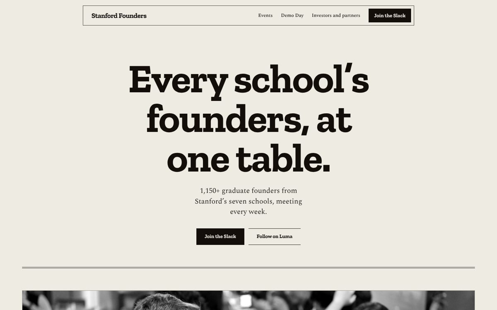
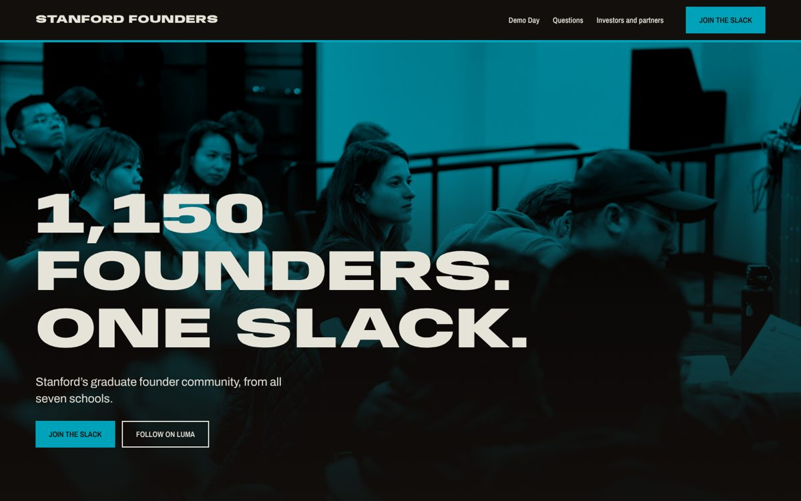
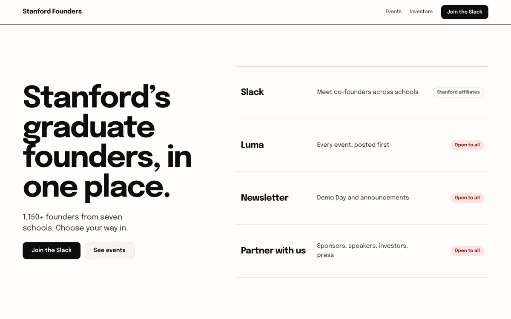

Three directions for the homepage
Full-page mockups built with the club's real photos, numbers and links. Nothing here replaces the live site. Each page opens with the Slack invite and Luma, and gives investors and partners their own way in.

A. Newsprint
The club as a broadsheet: a slab-serif headline, black-and-white photographs with captions, the WhatsApp origin story set in columns, and Cardinal only on links.
- Closest to Stanford's own tone; keeps Cardinal
- Helen Keller line kept as the closing statement
- Best if the newsletter becomes a real habit


B. Overprint
A two-colour event poster: wide heavy capitals, crowd photos printed through teal and orange, Demo Day set as a bill, and the page built around questions each audience asks.
- The loudest and most social; drops Cardinal
- Questions section speaks to founders, investors and partners in turn
- Best if events and Demo Day are the draw


C. Ink
A plain community notice board: white paper, black type, and a front desk on the first screen with four doors (Slack, Luma, newsletter, partners), each marked with who it is open to.
- Most direct for a mixed audience; Cardinal marks what is open
- Easiest to maintain as plain HTML
- Best if sign-ups are the main goal